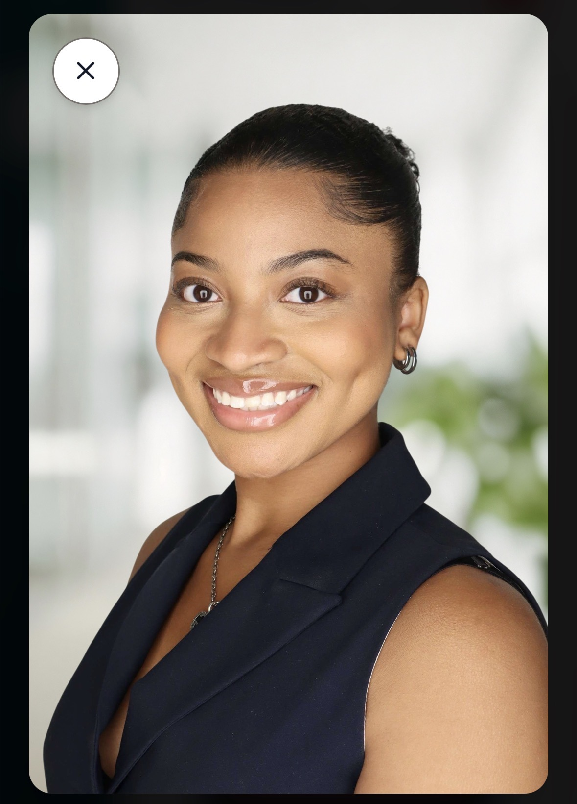
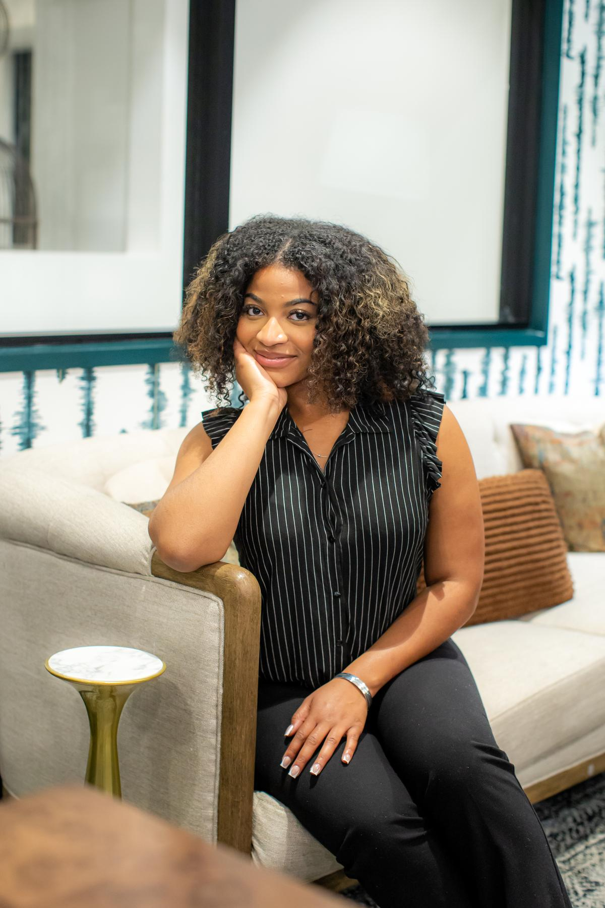
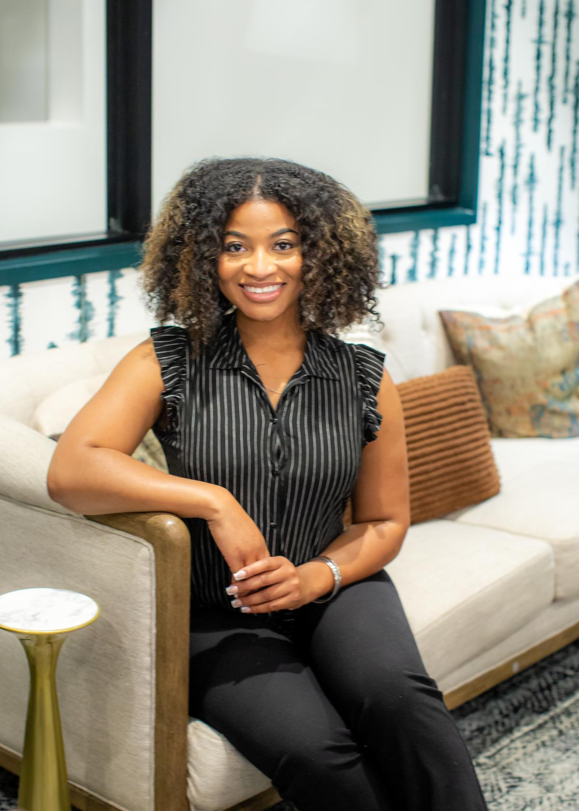
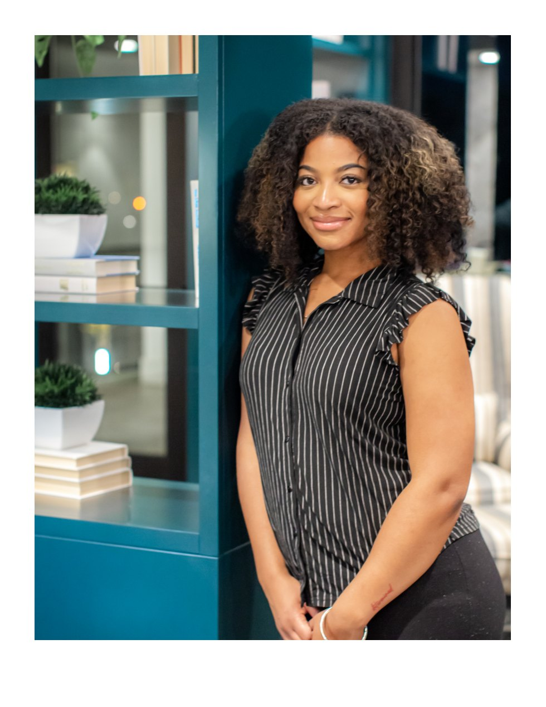
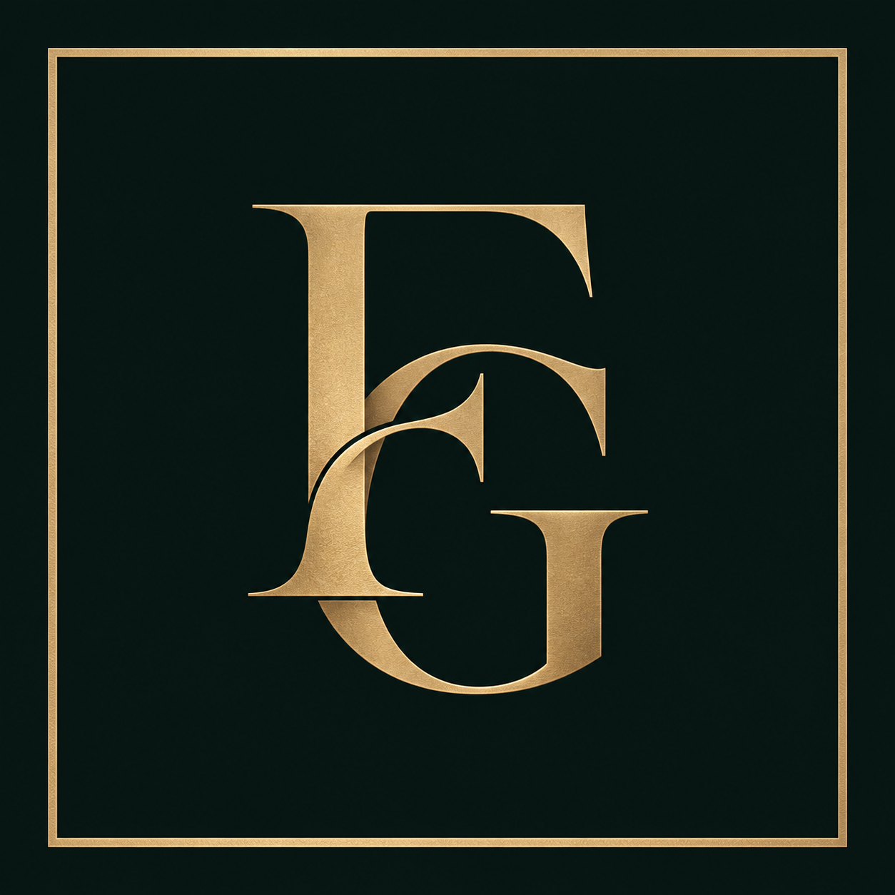

Technology Intern · Enterprise Architecture
Nuveen / TIAA
Worked on technology initiatives, intern matching platform design, reporting, and cross-functional project communication.
STRATEGY TODAY BRIGHTER TOMORROW
TECHNOLOGY · PRODUCT MANAGEMENT
BUSINESS STRATEGY · ENTREPRENEURSHIP
Building scalable solutions at the intersection of business and technology.

FEATURED WORK
Explore real projects across technology, product development, community initiatives, and entrepreneurship.
Project visuals are shown only where original materials have been provided. Confidential employer and client source code is not published.

ABOUT ME
I'm a Management Information Systems student at the University of North Carolina at Charlotte, with experience across enterprise technology, product leadership, project management, and business operations.
I enjoy connecting people, systems, and strategy to turn complex ideas into practical solutions.
MY PHILOSOPHY
“Growth is not linear, but with determination and self-belief, meaningful success is always possible.”
— Iyana M. Farrar

EXPERIENCE
Technology, program delivery, and business strategy informed by hands-on work.
Nuveen / TIAA
Worked on technology initiatives, intern matching platform design, reporting, and cross-functional project communication.
EmpowerHer Firm
Developed program deliverables and coordinated planning for leadership and innovation initiatives.
University City Partners
Contributed to community and economic-development initiatives, including the food truck park proposal.

CAREER JOURNEY · LINKEDIN HIGHLIGHTS
A period of growth across community engagement, project management, and enterprise technology.
SPORTS & COMMUNITY
Supporting club engagement and fan experiences as a Crown Crew Member.
TECHNOLOGY & ENTERPRISE ARCHITECTURE
Beginning a technology internship focused on learning, collaboration, and enterprise architecture.
PROFESSIONAL REFLECTION
The past three months have been incredibly rewarding and rigorous. Between helping Lacrisha Thomas develop impactful projects for EmpowerHer Firm, serving as a Crown Crew Member for Charlotte FC, and beginning my Technology Internship at Nuveen, a TIAA company, I’ve had the opportunity to grow both personally and professionally.
These experiences have taught me the value of discipline, collaboration, and embracing new challenges. Every project, deadline, and responsibility has contributed to my development and strengthened my passion for technology and business.
I’m excited for the next 10 weeks at TIAA and grateful for the opportunities, mentors, and experiences that continue to shape my future career goals. I’m looking forward to learning, growing, and making the most of this journey!
Huge thank you to Tabitha Hadley, Noelle Baisley, Ellie Wallace, and Lacrisha Thomas for their advice, guidance, and opportunities.
LEADERSHIP & RECOGNITION
Influential Women recognized Iyana Farrar, highlighting her work as an Architecture Technology Intern at Nuveen, a TIAA company.
This honor comes at a pivotal moment: the founding of Farrar Capital Group, my Project Management Consulting Firm. What started as a vision is now becoming a reality, and I’m humbled to be building something that reflects both my passion for strategic execution and my commitment to helping organizations move ideas forward.
To be recognized alongside such an incredible community of women is not something I take lightly. It’s a reminder that the work, the late nights, and the leap of faith to build something of my own are worth it.
This is just the beginning of this chapter. I’m excited for what’s ahead. For Farrar Capital Group, for the partnerships still to come, and for continuing to grow into the leader I’m becoming.
PROFESSIONAL ENDORSEMENTS
Two original recommendation letters from University City Partners leadership, reflecting my contributions to placemaking, project management, and community-centered strategy.
UNIVERSITY CITY PARTNERS · FEBRUARY 2026
“Iyana demonstrated strategic thinking, creativity, and professionalism.”
Internship Program Manager · University City Partners
Recognized for leadership in the University City Food Truck Park Proposal, including research, strategic benchmarking, budgeting, visual renderings, and presentation development.
UNIVERSITY CITY PARTNERS · FEBRUARY 2026
“She represents the type of emerging leader who understands how community focused ideas must be paired with disciplined execution.”
President · University City Partners
Recognized for helping shape the Food Truck concept through research, operational considerations, and an understanding of placemaking and small business support.
The quotations are reproduced from the original letters. Full original documents are provided without alteration.

FOUNDER · BUSINESS DEVELOPMENT
Building a business development and operations firm focused on helping organizations plan growth, strengthen systems, and implement strategy.
Explore the venture ↗LET'S CONNECT
Interested in technology, product and project management, and strategic business opportunities.